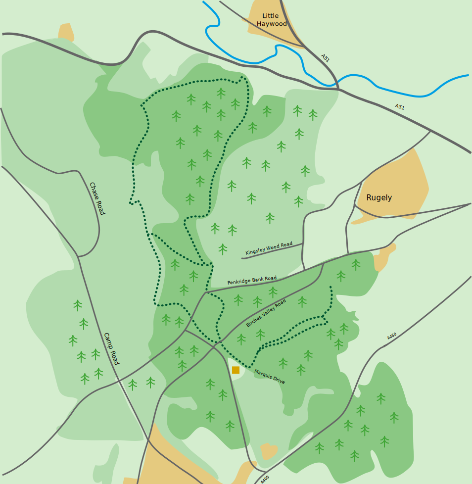

HABITATS
Cannock Chase has the largest surviving area of lowland heathland in the midlands – a habitat that is rarer than rainforest. It also encompasses ancient woodland, home to over 500 mature and veteran oak trees in Brocton Coppice, some of which are up to 600 years old. They’ve existed during several dynasties from the Tudors to the Kardashians, so we take looking after them seriously. There are also valley mires and fens in Cannock Chase, which provide a wetter environment that’s great for amphibians, like the Great Crested Newt, and invertebrates, like the White-Clawed Crayfish.
Tap the hotspots in each area of Cannock Chase Country Park to see which plants and animals live in which habitat.

Ancient woodland
-
{{item.title}}
Fens
-
{{item.title}}
Lowland Heath
-
{{item.title}}